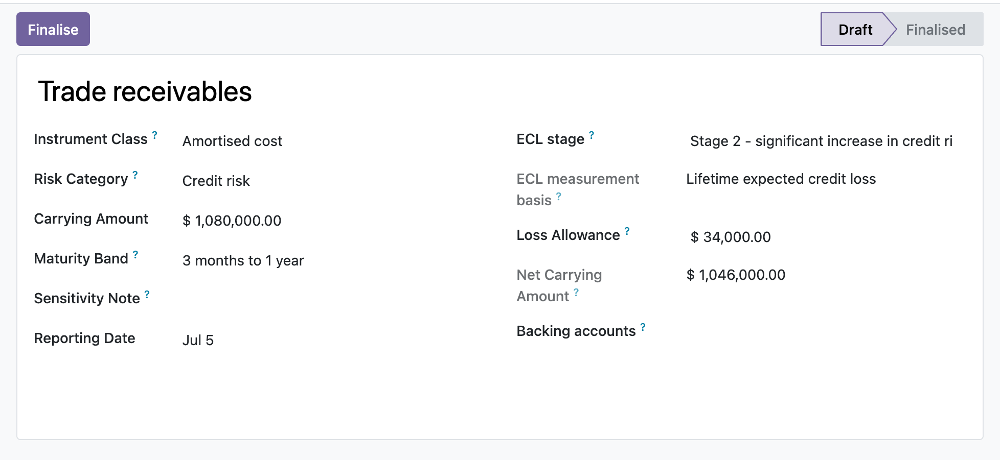

Five audit-locked disclosure registers, related parties, operating segments, financial-instrument risk, contractual-maturity analysis and interests in other entities, each tied back to the general ledger so the notes to your accounts reconcile to the books.
Related-party balances tie to the contact's posted receivable and payable lines, financial-risk carrying amounts tie to named accounts, and segment revenue and result derive from analytic-tagged postings, so a hand-keyed figure that drifts from the general ledger becomes visible instead of hiding in a spreadsheet.
Segments are tested against the IFRS 8.13 ten-percent revenue, profit-or-loss and asset thresholds; credit exposures are staged under the IFRS 9 twelve-month and lifetime ECL model that feeds the IFRS 7.35H net carrying amount; the maturity analysis projects undiscounted contractual cash flows including coupons per IFRS 7.B11D.
Every register can be finalised by an EH Accounting Manager, which freezes its input figures, blocks edits and deletes, and even refuses appended child rows so a signed-off disclosure cannot be silently re-keyed. Computed tie-out and reconciliation figures still recompute, and only a manager can reopen.
At period close the accountant builds the segment report, keys entity revenue and each reportable segment, and watches the reconciliation line and the ten-percent flags update as they go. They tag segment lines to analytic accounts so revenue and result pull straight from posted moves, then log related-party transactions with the outstanding balance auto-checked against each contact's ledger. A maturity run reads the open loan accounts and buckets the undiscounted cash flows into bands. When the numbers agree, the manager finalises each register, which freezes the figures and locks the disclosure for the auditor, who has read-only access.
In the shipped code today, each one a place where a cheaper module silently does the wrong thing.
The maturity analysis reads a financial-liability line as a positive outflow by taking the credit-side magnitude, so a payable is not mislabelled as a negative amount when bucketed into a band.
Per-instrument projection bands a coupon bond's interim coupons into the earlier maturity bands and its principal plus final coupon into the maturity band, rather than collapsing the whole instrument into one band, and a zero-rate instrument reports principal only.
Once a register is finalised, the child rows enforce a create guard, so a segment line, related-party transaction, maturity band or instrument cannot be appended to slip a figure past the frozen parent total.
A raw ORM write of the state field is manager-gated, so a plain user cannot finalise or reopen a disclosure behind the action buttons' back; the sanctioned transition sets an internal flag the guard checks.
A narrative-only relationship, segment or risk exposure with no linked contact, analytic account or backing account is treated as tied rather than drifted, so a register with no ledger counterpart never raises a false mismatch.
odoo 19 related party disclosure, IAS 24 related party transactions odoo, IFRS 8 operating segments odoo, segment reconciliation entity totals, IFRS 7 financial instrument risk disclosure, IFRS 7.39 maturity analysis, expected credit loss staging odoo, IFRS 9 ECL stage 1 2 3, IFRS 12 interests in other entities, non-controlling interest disclosure, notes to financial statements odoo, disclosure register odoo community, credit liquidity market risk disclosure, reportable segment threshold IFRS 8.13

Financial risk register with ECL stagingThe IFRS 7 credit-risk register: each exposure carries its IFRS 9 ECL stage and loss allowance, netting the gross carrying amount down to the reported net carrying amount.
Premium ERP Heritage modules that extend the same stack, each built to the same engineering bar.
Bring Employment Hero onboarding workflows, employee goals and contractor flags into Odoo Community as real recor...
End to end French B2B and B2G electronic invoicing for the DGFiP reform, generating Factur-X PDF/A-3 with embedde...
Accept ZainCash wallet payments in Iraq at your Odoo checkout, on the ZainCash Payment Gateway v2 with OAuth2, re...
Sync Employment Hero ATS recruitment job openings into the standard Odoo Recruitment app, mapping each opening on...
The New Zealand country pack for the ERP Heritage Employment Hero integration